RESET CLINIC 프리미엄 리프팅
-
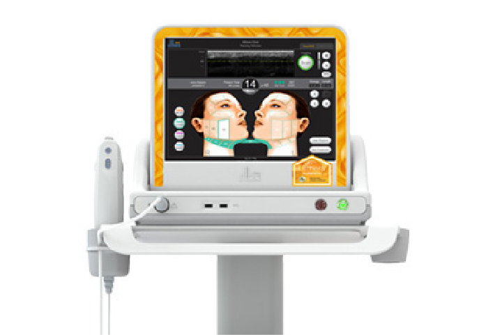고강도 직접 초음파를 이용하여 피부 속만 집중적으로 개선
울쎄라
-
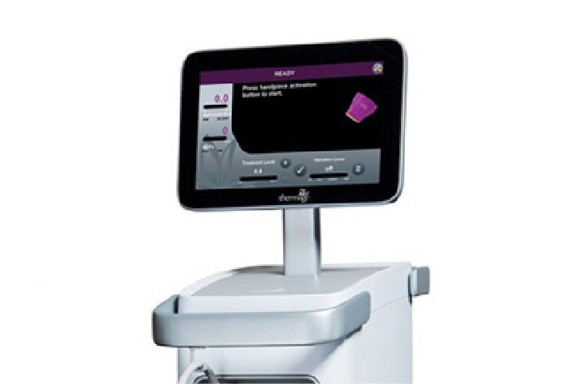고주파 열에너지를 이용한 현존하는 가장 강력한 피부 타이트닝 효과
써마지 FLX
-
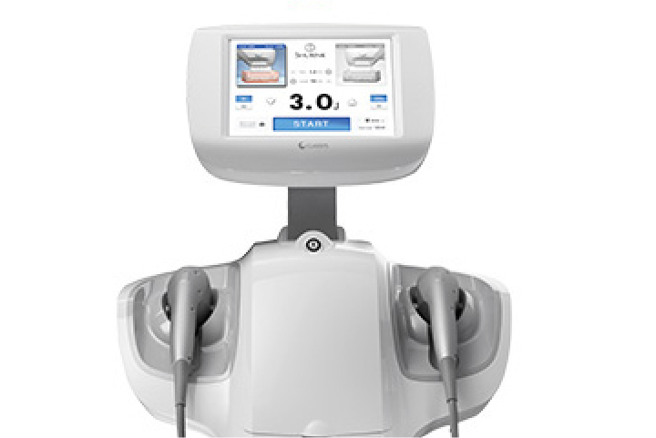근막층까지 레이저가 도달하여 절개 없이도 늘어진 피부를 효과적으로 당기고 주름을 개선
슈링크 리프팅
-
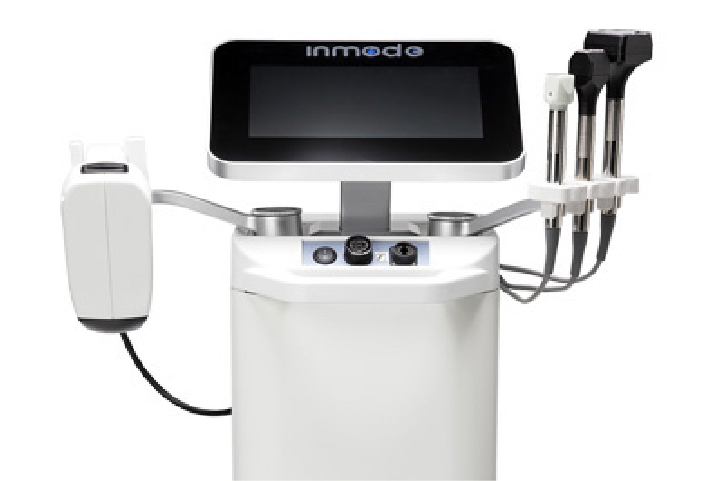고주파 에너지가 매끈한 피부결, 탄력, 볼륨, 타이트닝, 피부톤 개선 등 완벽 리프팅 효과
인모드 리프팅
-
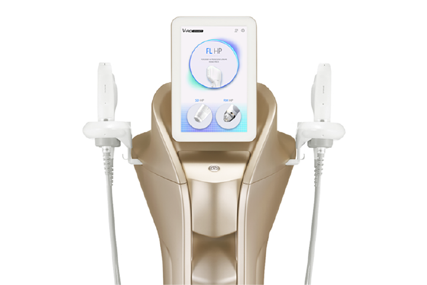초음파&고주파의 콤비네이션 시술로 깊고 넓은 부위까지 빈틈없는 리프팅
브이로 어드밴스
-
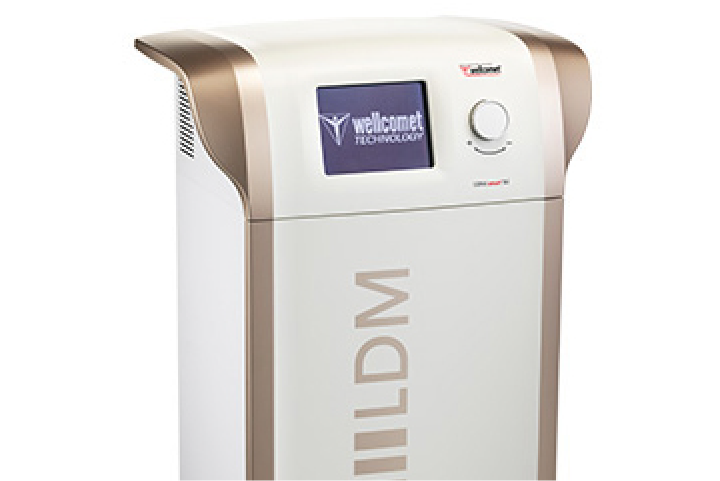고밀도 초음파 에너지를 이용해 피부 속 세포 활성을 유도
LDM 물방울 리프팅
-
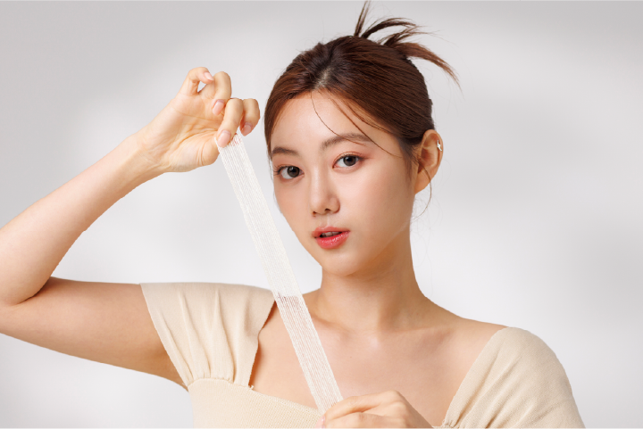잼버실, 탑스코, 콘셀티나 등을 이용하여 확실한 윤곽 개선 및 리프팅 효과
리셋 실리프팅
-
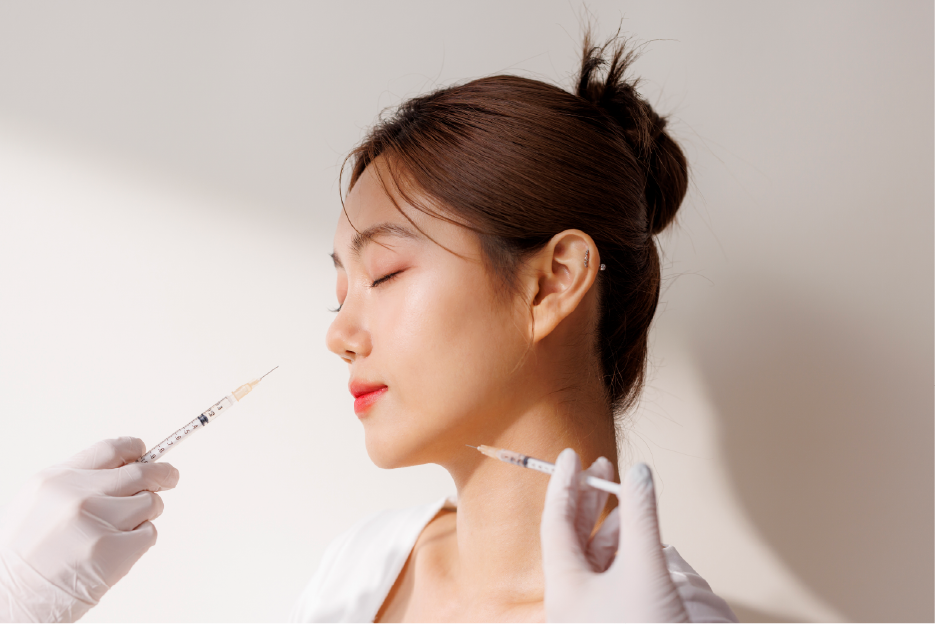보톡스를 이용한 피부층에서의 리프팅 효과
리프팅 리셋톡스
울쎄라 리프팅
고강도 직접 초음파를 이용하여 피부 속만 집중적으로 개선
-
안전한 시술
· 정품팁을 사용하는지, 불법으로 의료기기가 개조되어 사용되는지 확인이 필요합니다. -
뛰어난 효과
· SMAS층 전달
· 섬유조직 수축
· 처진 피부 당겨주는 효과
· 늘어진 턱선 개선, 이중턱 개선
· V라인 효과
[ 울쎄라 리프팅 추천 대상 ]
-
목주름, 눈가 주름이 신경쓰이는 분
-
수술에 대한 부담, 두려움이 있으신 분
-
전체적인 얼굴 주름 때문에 나이 들어 보이는 분
-
기존의 리프팅 시술로 효과를 얻지 못하신 분
써마지 FLX
고주파 열에너지를 이용한 현존하는 가장 강력한 피부 타이트닝 효과
-
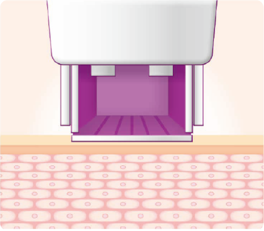
STEP 1
써마지 FLX 적용
-
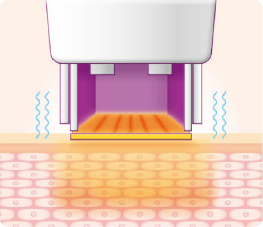
STEP 2
고주파 에너지 전달
-
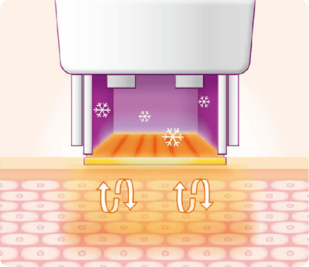
STEP 3
콜라겐 재생
-
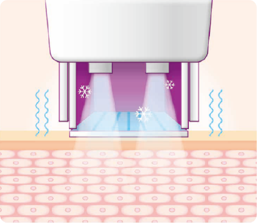
STEP 4
피부 탄력 증대
[ 페이스 써마지 추천 대상 ]
-
얼굴에 탄력이 떨어지기 시작하는 분
-
얼굴에 주름이 생겨 신경쓰이는 분
-
잔주름과 모공이 신경쓰이는 분
-
팔자주름과 이중턱이 고민인 분
[ 아이 써마지 추천 대상 ]
-
눈가에 주름이 생기기 시작하는 분
-
눈꺼풀이 너무 힘이없이 처지는 분
-
눈꺼풀이 얇고 잔주름이 많으신 분
-
수술이나 부자연스러운 결과는 싫으신 분
슈링크 리프팅
근막층까지 레이저가 도달하여 절개 없이 늘어진 피부를 효과적으로 당기고 주름을 개선
[ 슈링크 리프팅 장점 ]
-
식약처가 인증한 안정성이 입증된 기기
-
비절개 방식의 안전한 리프팅 시술
-
15~20분 내외의 짧은 시술 시간
-
다수의 인상케이스로 효과 증명
-
최신 HIFU 기술을 적용한 시술
인모드 리프팅
고주파 에너지가 매끈한 피부결, 탄력, 볼륨, 타이트닝, 피부톤 개선 등 완벽한 리프팅 효과
[ 인모드 리프팅 추천 대상 ]
-
통증없는 리프팅 시술을 원하시는 분
-
지방파괴와 윤곽 및 탄력 리프팅을 원하시는 분
-
피부 전체가 처지고, 피부결이 거칠어져 고민이신 분
-
다수의 인상케이스로 효과 증명
-
회복기간 없이 바로 일상생활을 원하시는 분
브이로 어드밴스
집속초음파(HIFU)와 고주파(RF) 2가지 시술이 가능한 기존 브이로 리프팅 장비의 업그레이드 버전으로 새롭게 추가된 RM 핸드피스를 포함한 총 5개의 핸드피스를 이용해 보다 빠르고 강력한 리프팅 효과 경험 가능.
[ 브이로 어드밴스 장점 ]
-
초음파와 고주파를 한번에 시술
-
강화된 성능으로 빨라진 시술
-
통증을 완화한 편안한 시술
-
다양한 카트리지로 맞춤형 시술
LDM 물방울 리프팅
고밀도 초음파 에너지를 이용해 피부 속 활성을 유도하여 건강하고 탄력있는 피부 기대 효과.
전자기장 고주파로 통증없이 피부 깊은 곳의 콜라겐 재생과 타이트닝 가능.
[ LDM 물방울 리프팅 시술 효과 ]
-
피부결 & 건조함 개선
-
피부면역 증진
-
피부탄력 & 리프팅 효과
-
피부 문제 개선
[ LDM 물방울 리프팅 추천 대상 ]
-
피부의 근본적인 탄력이 필요하신 분
-
간편하고 적은 통증으로 리프팅 시술을 원하는 분
-
안면 홍조가 있으신 분
-
피부 트러블이 심하고 예민한 피부
리셋 실리프팅
잼버실, 탑스코, 콘셀티나 등을 이용하여 확실한 윤곽 개선 및 리프팅 효과
[ 리셋 실리프팅 장점 ]
-
파워풀한 볼륨 업
-
짧은 시술 시간
-
멍과 출혈 최소화
-
부드럽고 유연함
-
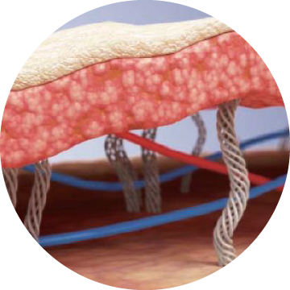
STEP 1
노화와 지방 감소로 꺼져있거나 쳐진 피부
-
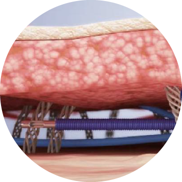
STEP 2
피부에 실을 삽입하여 꺼진 부분에 볼륨 생성
-
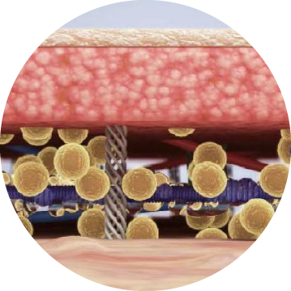
STEP 3
실 안쪽과 주변 피부 재생
-
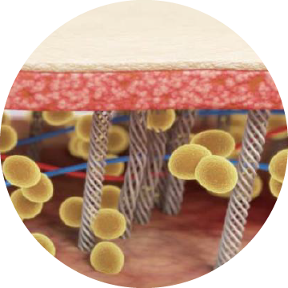
STEP 4
실이 삽입된 부위에 콜라겐 생성. 실이 녹은 후에도 효과 지속
리프팅 리셋톡스
보톡스를 이용한 피부층에서의 리프팅 효과
[ 리프팅 리셋톡스 추천대상 ]
-
얼굴 축소 효과를 원하시는 분
-
턱 부위를 V라인으로 개선하고 싶으신 분
-
자연스러운 리프팅 효과를 경험하고 싶으신 분
-
안면윤곽과 피부 탄력 개선 둘 다 필요하신 분
-
표정변화에 어색함이 없는 보톡스 시술을 원하시는 분